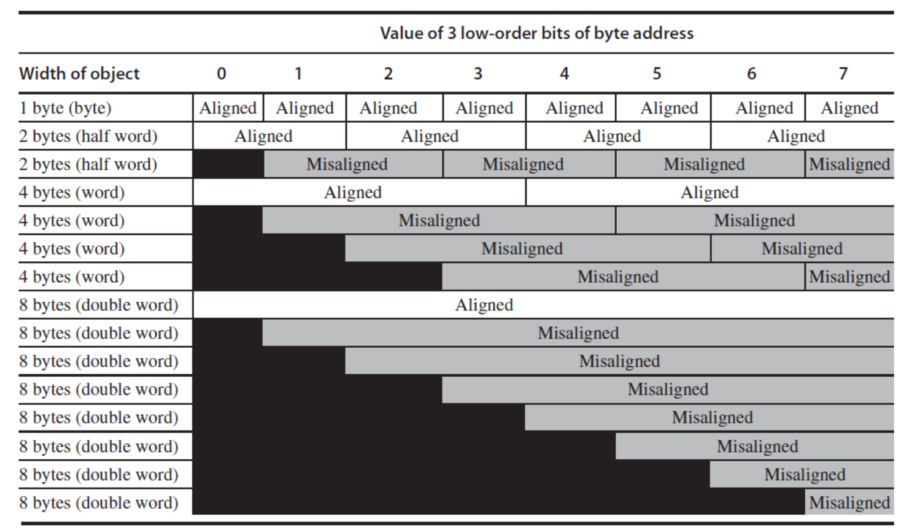
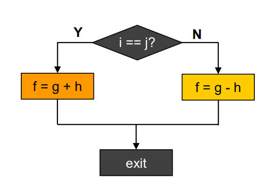

第二章 指令：计算机的语言 RISC-V
一、计算机系统层级与ISA核心概念
1.1 计算机系统全层级
从上层应用到底层硬件的完整层级如下，ISA是软硬件的核心分界层：
- 上层：程序员面向编程语言、操作系统开发
- 中层：架构师基于ISA设计微体系结构
- 底层：电子工程师实现电路与器件
1.2 ISA核心定义
指令集体系结构(ISA)是计算机支持的指令集合，是软硬件之间的标准接口：
- 不同计算机的指令集存在差异，但核心设计有大量共性
- 早期计算机与现代RISC架构均采用简单指令集，简化硬件实现
- RISC-V是本课程的核心示例ISA，为免费开源的标准化ISA，由RISC-V基金会维护
二、RISC-V ISA概述
RISC-V指令固定编码为32位指令字，采用少量规整的指令格式，核心特性是规整性。分为基础整数指令集和可选扩展指令集。
2.1 基础整数指令集
| 指令集 | 描述 | 版本 | 状态 |
|---|---|---|---|
| RV32I | 32bit 基础整数指令 | 2.1 | 批准 |
| RV32E | 32bit 嵌入式精简指令 | 1.9 | 批准 |
| RV64I | 64bit 基础整数指令 | 2.1 | 批准 |
| RV128I | 128bit 基础整数指令 | 1.7 | 批准 |
2.2 标准扩展指令集
| 扩展代号 | 描述 | 版本 | 状态 |
|---|---|---|---|
| M | 乘除法指令扩展 | 2.0 | 批准 |
| A | 原子指令扩展 | 2.1 | 批准 |
| F | 单精度浮点指令扩展 | 2.2 | 批准 |
| D | 双精度浮点指令扩展 | 2.2 | 批准 |
| Zicsr | 控制和状态寄存器指令 | 2.0 | 批准 |
| Zifence | Fence 内存屏障指令扩展 | 2.0 | 批准 |
| C | 压缩指令扩展 | 2.0 | 批准 |
| H | 虚拟化指令扩展 | 1.0 | 批准 |
| B | 比特操作指令扩展 | 1.0 | 开放 |
| P | SIMD 指令扩展 | 0.2 | 开放 |
| K | 加解密指令扩展 | 1.0 | 开放 |
| V | 向量指令扩展 | 1.0 | 开放 |
通用组合：
RV32IMAFD称为G通用组合，是最常用的基础配置。
三、RISC-V四大核心设计原则
这是RISC-V架构设计的核心思想，贯穿整个指令集规范：
1. Simplicity favors regularity（简洁源于规整性）
所有算术操作采用统一的三操作数格式（2源1目的），规整的指令格式大幅简化硬件解码与实现，以低成本实现更高性能。
2. Smaller is faster（越小越快）
采用32个32位的寄存器文件，容量远小于主存，但访问延迟远低于内存，高频访问数据优先放入寄存器，是性能优化的核心手段。
3. Make the common case fast（让常见场景更快）
程序中小常数的使用非常普遍，指令内置立即数操作数，避免额外的内存load指令，大幅提升常用操作的执行效率。
4. Good design demands good compromises（优秀的设计需要合理的折中）
多指令格式虽增加了解码复杂度，但保证了所有指令统一32位固定长度，且各格式的核心字段位置尽可能对齐，平衡了编程灵活性与硬件实现难度。
四、算术操作与操作数体系
4.1 算术操作基础
RISC-V所有算术指令采用三操作数格式，固定为「2个源操作数 + 1个目的操作数」，格式如下：
示例：C代码编译为RISC-V汇编
C代码：
编译后的RISC-V汇编：
4.2 寄存器操作数
寄存器是CPU中最快的存储单元，是算术指令的核心操作数：
- RV32I包含32个32位通用寄存器，编号x0\(\sim\)x31，32位数据称为1个字（word）
- 核心特性：x0寄存器硬编码为常数0，无法被改写，是简化指令设计的关键
- 汇编规范：x0\(\sim\)x31为寄存器编号，也可使用ABI别名（如t0\(\sim\)t6为临时寄存器，s0\(\sim\)s11为保存寄存器）
寄存器操作示例
已知f\(\sim\)j分别对应寄存器x19\(\sim\)x23，上述C代码的精确汇编：
4.3 内存操作数
主存用于存储数组、结构体、动态数据等复合数据，算术操作无法直接作用于内存，必须遵循「先加载到寄存器，运算后写回内存」的规则。
核心特性
- 内存按字节编址：每个地址对应1个8位字节
- 字对齐约束：32位字的地址必须是4的倍数，非对齐访问会触发地址错误异常
- 字节序：RV32I默认采用小端序（Little Endian），即最低有效字节存放在最低地址
核心内存指令
RISC-V 只提供两类指令与内存交互：Load指令从内存加载数据到寄存器，Store指令将寄存器数据存储到内存：
| 指令 | 全称 | 语义 |
|------|------|------|
| lw | Load Word | 从内存加载32位字到寄存器 |
| sw | Store Word | 将寄存器的32位字存储到内存 |
内存操作示例
示例1：数组读取
C代码：
编译后的汇编：
示例2：数组写入
C代码：
编译后的汇编：
Memory 与 Register
Compiler must use registers for variables as much as possible
- Only spill to memory for less frequently used variables
- Register optimization is important!
一般来叔，我们尽量多使用寄存器操作，减少内存的访问。
4.4 内存对齐规则
RISC-V对不同位宽的内存访问有严格的对齐要求，非对齐访问会触发异常：
| 访问位宽 | 对齐要求 | 合法地址特征 |
|---|---|---|
| 1字节（Byte） | 无限制 | 任意地址均对齐 |
| 2字节（Half Word） | 2字节对齐 | 地址最低1位为0 |
| 4字节（Word） | 4字节对齐 | 地址最低2位为0 |
| 8字节（Double Word） | 8字节对齐 | 地址最低3位为0 |

4.5 大小端序详解
| 类型 | 定义 | 典型架构 |
|---|---|---|
| 大端序（Big Endian） | 最高有效字节（MSB）存放在最低地址 | Motorola 68000、PowerPC、SPARC V9前 |
| 小端序（Little Endian） | 最低有效字节（LSB）存放在最低地址 | x86、RISC-V、6502 |
| 双端序（Bi-endian） | 支持大小端切换 | ARM、PowerPC、SPARC V9 |
示例：32位数0xOAOBOCOD的内存存储
- 大端序：地址a存0xOA，a+1存0xOB，a+2存0xOC，a+3存0xOD
- 小端序：地址a存0xOD，a+1存0xOC，a+2存0xOB，a+3存0xOA
4.6 立即数与零操作数
- 立即数算术指令：
addi，直接在指令中嵌入常数，无需额外内存加载，示例：
- x0寄存器的妙用：实现寄存器间数据移动，无需专用mov指令
4.7 符号扩展
符号扩展是用更多比特表示数字，同时保持数值不变的规则：
- 有符号数：复制符号位到高位
- 无符号数：高位补0
- 示例：8位数扩展为16位数
- +2：0000 0010 → 0000 0000 0000 0010
- -2：1111 1110 → 1111 1111 1111 1110
- RISC-V应用：addi、lb/lh、beq/bne等指令均会自动执行符号扩展
五、RISC-V 32位指令编码格式
RISC-V所有指令均为32位固定长度，分为6大核心格式，各格式的核心寄存器字段位置高度对齐，简化硬件解码。
5.1 六大指令格式总览
| 格式 | 全称 | 核心用途 |
|---|---|---|
| R-type | Register-Register | 寄存器间算术、逻辑、移位操作 |
| I-type | Immediate | 立即数算术、内存加载、寄存器间接跳转 |
| S-type | Store | 内存存储操作 |
| SB-type | Branch | 条件分支操作 |
| U-type | Upper Immediate | 高位立即数加载，构建32位常数 |
| UJ-type | Jump | 无条件跳转操作 |
5.2 各格式详细字段定义
所有格式均为32位，字段从高位（bit31）到低位（bit0）排列，核心字段说明：
- opcode：7位操作码，区分指令大类
- rs1/rs2：5位源寄存器编号，支持0\(\sim\)31
- rd：5位目的寄存器编号
- funct3/funct7：扩展操作码，区分同opcode下的不同指令
- immediate：立即数字段，不同格式拆分方式不同
5.2.1 R-type（寄存器-寄存器型）
字段结构：
| funct7 | rs2 | rs1 | funct3 | rd | opcode |
|--------|-----|-----|--------|----|--------|
| 7位 | 5位 | 5位 | 3位 | 5位| 7位 |
- 固定opcode：0110011
- 核心指令：add/sub/sll/srl/sra/or/and/xor
- 编码示例：add x9, x20, x21
二进制：0000000 10101 10100 000 01001 0110011
十六进制：0x015A04B3
5.2.2 I-type（立即数/加载型）
字段结构：
| immediate[11:0] | rs1 | funct3 | rd | opcode |
|------------------|-----|--------|----|--------|
| 12位 | 5位 | 3位 | 5位| 7位 |
- 核心opcode：
- 立即数算术：0010011（addi/xori/ori/andi等）
- 内存加载：0000011（lw/lb/lh等）
- 寄存器跳转：1100111（jalr）
- 特点：12位有符号立即数，支持符号扩展，12位有符号立即数范围为\(-2048\sim 2047\)
其他指令编码格式见：附录
六、逻辑与移位操作
6.1 位操作指令映射
| 操作 | C语言 | Java | RISC-V指令 |
|---|---|---|---|
| 逻辑左移 | << | << | sll, slli |
| 逻辑右移 | >> | >>> | srl, srli |
| 算术右移 | >> | 无 | sra, srai |
| 按位与 | & | & | and, andi |
| 按位或 | | | | | or, ori |
| 按位异或 | ^ | ^ | xor, xori |
| 按位非 | \(\sim\) | \(\sim\) | xori rd, rs1, -1 |
6.2 核心位操作用途
- 移位操作：
sll左移i位等价于乘以\(2^i\)； - AND操作：掩码操作，提取指定位、清除其他位为0
- OR操作：置位操作，将指定位设为1
- XOR操作：翻转指定位，实现按位非
七、控制流：分支与跳转
控制流是计算机区别于计算器的核心能力，通过修改程序计数器（PC）实现分支、循环、函数调用等逻辑。PC保存当前正在执行指令的地址，正常执行时自增4，仅分支/跳转指令可修改。
7.1 核心控制流指令
| 指令类型 | 指令 | 语义 |
|---|---|---|
| 条件分支 | beq rs1, rs2, label |
若rs1 == rs2，跳转到label |
| 条件分支 | bne rs1, rs2, label |
若rs1 != rs2，跳转到label |
| 条件分支 | blt rs1, rs2, label |
若rs1 < rs2（有符号），跳转到label |
| 条件分支 | bge rs1, rs2, label |
若rs1 >= rs2（有符号），跳转到label |
| 条件分支 | bltu/bgeu |
无符号比较分支 |
7.2 案例：if-else语句编译
C代码：
程序结构：

编译后的RISC-V汇编：
bne x22, x23, Else # 若i != j，跳转到Else分支
add x19, x20, x21 # if分支：f = g + h
beq x0, x0, Exit # 无条件跳转到Exit，跳过else分支
Else: sub x19, x20, x21 # else分支：f = g - h
Exit: # 后续指令
注意，beq x0, x0, Exit 确保不会执行一次 Else，通过一个恒真的条件实现跳转。
程序结构：
7.3 案例：while循环语句编译
C代码：
注意，save 数组存放在 Memory 中，数据位宽32，因此 C 中的索引 +1 不能直接用 Memory 的地址 +1 来访问，应该是地址 +4 来访问下一个元素才对。
编译后的RISC-V汇编：